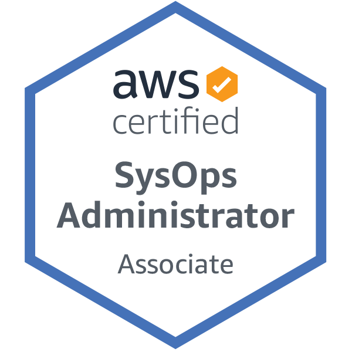

Prajwal M R
prajwall.mr@gmail.com
Bangalore, India
+91 9591499393
Profile Summary
Cloud Devops Engineer with 2+ years of hands-on experience in using Terraform to build infrastructure and Python scripting in AWS Lambda to automate processes.
Proficient with source code management systems (GIT).
Good Knowledge on Atlassian tools like Jira, Confluence and Bitbucket.
Hands-on experience using Jenkins as a CICD tool.
Exclusive Knowledge & exposure to the process and implementation of the activities in the project.
Strong perseverance and diligence towards attaining challenging goals and possess good communication skills and quick learning ability.
Professional Experience
CLOUDOPS ENGINEER, TCS, BANGALORE OCT 2018 – PRESENT
Responsibilites
Creating and managing IAM users, groups and policies using Terraform as IaaC, Bitbucket and Jenkins as a code CICD.
Working on Network related activities like establishing the peering connection between VPCs and adding the NACL rules to subnets with Terraform and troubleshooting network related issues.
Build AWS Lambda functions to automate the processes of IAM compliance for alerting the users of non-compliance(Access key, Password, MFA).
Improve and maintain the Lambda functions for the AWS account grovernance/compliance automation services.
Work with application and architecture teams to conduct POC and implement the design in production environment in AWS.
VPC build and bootstrap the VPC with the organization standards.
Deploying the grovernance/compliance stacks in the new VPC.
Build the Jenkins jobs using the Groovy script as per our deployment needs.
Minimal exposure on Ansible and packer for baking AMI.
Troubleshooting the issues related to application infrastructure like Security groups, Hosted zones, Backup management.
Work closely with business to understand and incorporate nonfunctional requirements in the application architecture.
Certification
Certified AWS SysOps Administrator - Associate.
Validation No. : 4JTHHL1JC1V41S3K
KeySkills
• Cloud Computing • Requirement Gathering • Requirement Analysis • AWS Setup & Architecture • Agile Methodology • Cloud Setup & Management • Troubleshooting • User Authentication & Access • Automation • Cloud Deployment • User Training
Technical Skills
Cloud: Amazon Web Services (Certified)
Database: MySQL and RDS(DDL, DML, DDL)
Scripting: Python, Shell/Bash
Integration/CICD tool: Jenkins
Infracture as a Code: Terraform
Containerization: Docker
Version Control: Git, Bitbucket
Ticketing Tool: JIRA, Confluence
OS: Windows, Linux
Configuration Management Tool: Ansible
Education
Adichunchanagiri Institute of Technology, Chikmagaluru, Karnataka
Bachelor of Engineering (Electronics and Communication Engineering) 2014 – 2018